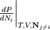
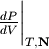
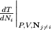
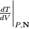
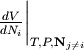
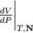

7. The rmg.model Module¶
Contains classes for working with the reaction model generated by RMG.
7.1. Classes in rmg.model¶
7.1.1. BatchReactor¶
- class rmg.model.BatchReactor(temperatureModel=None, pressureModel=None, volumeModel=None, initialConcentration=None)¶
A model of a batch reactor. A batch reactor is a well-mixed system with no external inputs or output, so all transport effects can be neglected. Any two of a temperature model, pressure model, and volume model can be specified; the remaining one is dependent on the choice of the other two.
- getReactionRates(P, V, T, Ni, model)¶
- Evaluate the reaction rates for all reactions in the model (core and edge).
- getResidual(t, y, model, stoichiometry)¶
Return the residual function for this reactor model, evaluated at time t and values of the dependent variables y. The residual function is the right-hand side of the equation

The dependent variables include temperature, pressure, volume, and numbers of moles for each species.
- isModelValid(model, P, V, T, Ni, stoichiometry, t)¶
- Returns True if model is valid at the specified pressure P, volume V, temperature T, and numbers of moles Ni. The final parameter t is the current simulation time.
- postprocess(model, t, y, label='')¶
- Postprocess the results of a simulation. This function generates a number of plots: temperature, pressure, volume, and concentration profiles. The parameters are the reaction model, the list of times t, the list of state vectors y, and an optional label for the reaction system.
- printSimulationStatus(model, t, y, y0, charFlux, maxSpeciesFlux, maxSpecies)¶
- Log a line of text describing the current status of the simulation. The information logged is the current time t, the current conversion of all species being monitored for conversion targets, the characteristic flux charFlux, the maximum species flux maxSpeciesFlux, and the species with that flux maxSpecies.
- simulate(model)¶
- Conduct a simulation of the current reaction system using the core-edge reaction model model.
7.1.2. CoreEdgeReactionModel¶
- class rmg.model.CoreEdgeReactionModel(core=None, edge=None)¶
Represent a reaction model constructed using a rate-based screening algorithm. The core is a reaction model that represents species and reactions currently in the model, while the edge is a reaction model that represents species and reactions identified as candidates for addition to the core.
- addReactionToCore(rxn)¶
- Add a reaction rxn to the reaction model core (and remove from edge if necessary). This function assumes rxn has already been checked to ensure it is supposed to be a core reaction (i.e. all of its reactants AND all of its products are in the list of core species).
- addReactionToEdge(rxn)¶
- Add a reaction rxn to the reaction model edge. This function assumes rxn has already been checked to ensure it is supposed to be an edge reaction (i.e. all of its reactants OR all of its products are in the list of core species, and the others are in either the core or the edge).
- addSpeciesToCore(spec)¶
- Add a species spec to the reaction model core (and remove from edge if necessary). This function also moves any reactions in the edge that gain core status as a result of this change in status to the core.
- addSpeciesToEdge(spec)¶
- Add a species spec to the reaction model edge.
- enlarge(newSpecies)¶
- Enlarge a reaction model by moving newSpecies from the edge to the core.
- getLists()¶
- Return lists of all of the species and reactions in the core and the edge.
- getReactionRates(T, P, Ci)¶
- Return an array of reaction rates for each reaction in the model core and edge. The core reactions occupy the first rows of the array, while the edge reactions occupy the last rows.
- initialize(coreSpecies)¶
- Initialize a reaction model with a list coreSpecies of species to start out with.
- isValid(T, P, conc)¶
- Return True if the model is valid at the specified conditions - temperature T, pressure P, and dictionary of concentrations conc - or False otherwise. A model is considered valid if the flux to all species in the edge is less than a certain tolerance (usually some fraction of the root mean square flux of all core reactions).
7.1.3. IdealGas¶
- class rmg.model.IdealGas¶
An equation of state based on the ideal gas approximation

where
 is the total number of moles.
is the total number of moles.The ideal gas approximation is generally valid for gases at low pressures and moderate tempertaures; it does not predict the gas-liquid phase transition and is not applicable to liquids.
- getPressure(T, V, N)¶
- Return the temperature associated with temperature T, volume V, and numbers of moles N.
- getTemperature(P, V, N)¶
- Return the temperature associated with pressure P, volume V, and numbers of moles N.
- getVolume(T, P, N)¶
- Return the volume associated with temperature T, pressure P, and numbers of moles N (which may be a list, in which case it’s summed).
- getdPdNi(P, V, T, N, i)¶
- Return the derivative  evaluated at a given pressure P, volume V, temperature T, and numbers of moles N. The final parameter i is used to determine which species to use; if N is a list, then i is an index, while if N is a dictionary, i is a key.
- getdPdT(P, V, T, N)¶
- Return the derivative
 evaluated at a given pressure P, volume V, temperature T, and
numbers of moles N.
evaluated at a given pressure P, volume V, temperature T, and
numbers of moles N.
- getdPdV(P, V, T, N)¶
- Return the derivative  evaluated at a given pressure P, volume V, temperature T, and numbers of moles N.
- getdTdNi(P, V, T, N, i)¶
- Return the derivative  evaluated at a given pressure P, volume V, temperature T, and numbers of moles N. The final parameter i is the index of the species of interest, corresponding to an index into the list N.
- getdTdP(P, V, T, N)¶
- Return the derivative
 evaluated at a given pressure P, volume V, temperature T, and
numbers of moles N.
evaluated at a given pressure P, volume V, temperature T, and
numbers of moles N.
- getdTdV(P, V, T, N)¶
- Return the derivative  evaluated at a given pressure P, volume V, temperature T, and numbers of moles N.
- getdVdNi(P, V, T, N, i)¶
- Return the derivative  evaluated at a given pressure P, volume V, temperature T, and numbers of moles N. The final parameter i is the index of the species of interest, corresponding to an index into the list N.
- getdVdP(P, V, T, N)¶
- Return the derivative  evaluated at a given pressure P, volume V, temperature T, and numbers of moles N.
- getdVdT(P, V, T, N)¶
- Return the derivative
 evaluated at a given pressure P, volume V, temperature T, and
numbers of moles N.
evaluated at a given pressure P, volume V, temperature T, and
numbers of moles N.
7.1.4. InvalidReactionSystemException¶
- class rmg.model.InvalidReactionSystemException(label)¶
- An exception used when an invalid reaction system is encountered.
7.1.5. PressureModel¶
- class rmg.model.PressureModel¶
- Represent a pressure profile. Currently the only implemented model is isobaric (constant pressure).
7.1.6. ReactionModel¶
- class rmg.model.ReactionModel(species=None, reactions=None)¶
- Represent a generic reaction model. A reaction model consists of species, a list of species, and reactions, a list of reactions.
7.1.7. ReactionSystem¶
- class rmg.model.ReactionSystem(temperatureModel=None, pressureModel=None, volumeModel=None, initialConcentration=None)¶
Represent a generic reaction system, e.g. a chemical reactor. A reaction system is defined by a temperature model temperatureModel, a pressure model pressureModel, a volume model volumeModel, and a dictionary of initial and constant concentrations initialConcentration. Only two of temperatureModel, pressureModel, and volumeModel are independent; the remaining one must be set to None.
Each RMG job can handle multiple reaction systems; the resulting model will generally be the union of the models that would have been generated via individual RMG jobs, and will therefore be valid across all reaction systems provided.
- setModels(temperatureModel, pressureModel, volumeModel)¶
- Set any two of the reactor’s temperatureModel, pressureModel or volumeModel. Attempting to set all three to non-None will cause an InvalidReactorModelException to be raised.
7.1.8. TemperatureModel¶
- class rmg.model.TemperatureModel¶
- Represent a temperature profile. Currently the only implemented model is isothermal (constant temperature).